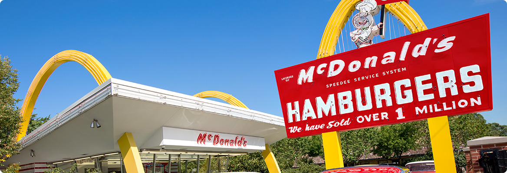

브랜드 소개
1955년 작은 레스토랑에서부터 지금에 이르기까지 고객이 가장 좋아하는 장소이자,
음식을 즐기는 최고의 방법이 되기 위해 맥도날드는 오늘도 노력합니다.

세계1위의 푸드서비스 기업, 맥도날드
전세계 120개국 3만 7천여 개의 매장에서 매일 6,900만명의 고객들에게 제품과 서비스를 제공하고 있는 맥도날드는 전세계인들이 사랑하는
퀵 서비스 레스토랑(QSR, Quick Service Restaurant)이자 세계 1위의 푸드서비스 기업으로, 고객에게 더 나은 경험을 제공함으로써
'고객이 가장 좋아하는 장소이자 음식을 즐기는 최고의 방법(Our Customer’s Favorite Place and Way to Eat)'이 되기 위해 노력하고
있습니다.
한국 맥도날드의 첫 걸음
-

1988 서울 올림픽을 개최하며 서울이 세계 속에
우뚝 섰던 그때의 감동을 기억하십니까?159개국의 83,190명의 선수가 참가한 1988 서울 올림픽과 함께 맥도날드가
한국을 찾아왔습니다. 이후 맥도날드는 빅맥, 후렌치 후라이 그리고 해피밀과 같이
세계적으로 유명한 메뉴를 선보이며 한국 소비자들이 선호하는 즐거운 외식 공간으로
사랑을 받고 있습니다. -

한국 첫 맥도날드 매장, 압구정점 그랜드 오프닝
맥도날드는 가장 트렌디한 장소로 떠오르는 압구정동에 첫 레스토랑을 열었습니다.
수백 명의 고객들이 레스토랑 앞에 길게 줄을 늘어서며 맥도날드의 성공적인 시작을
함께 축하했고 이를 통해 맥도날드가 한국 시장에서 지속적으로 성장할 수 있다는
잠재력을 보여 주었습니다. -

우리는 계속해서 나아갑니다.
맥도날드는 지난 31년 동안 국내 협력 업체와 긴밀하게 일하고, 현재 15,000여명의
직원이 근무하는 등 한국 사회의 고용 창출에 기여하고 있습니다. 또한, 30여개 이상의
국내외 비즈니스를 지원해 왔습니다. 맥도날드는 좋은 품질의 제품을 합리적인 가격과
최상의 서비스 제공을 통해 고객이 가장 선호하는 장소로 거듭나기 위해 지속적으로
노력할 것입니다.
맥도날드가 걸어온 길
-
2022
‘보성녹돈 버거 페스티벌’ 개최김기원 대표이사 부임
전국 직영 매장 전기바이크 100% 도입 완료
‘마이 맥도날드 리워드’ 프로그램 정식 출시 -
2021
한국 최초 탠덤 드라이브스루 출시'Taste of Korea' 프로젝트 시작
'The BTS 세트' 출시 -
2000
미래형 친환경 매장 '고양삼송DT점' 오픈아시아 최초 ‘베스트 버거’ 도입으로 버거 맛과 품질
업그레이드앤토니 마티네즈 대표이사 부임
-
2019
제주, 광주 지역 맥딜리버리 바이크를 친환경 전기 바이크로 전면 교체
서울시와 전기바이크 교체 업무협약(MOU) 체결 -
2018
2018 평창 동계올림픽 공식 후원

- 2017
프리미엄 수제 버거 '시그니처 버거' 전국 런칭- 2016
국내 첫 미래형 매장 상암 DMC점 오픈
슈비버거 슈슈버거 출시
조주연 대표이사 부임- 2015
프리미엄 수제 버거 '시그니처 버거' 첫 출시- 2014
1955 버거 출시- 2013
한국 진출 25주년
조 엘린저(Joe Erlinger) 대표이사 부임
‘행복의 버거’ 캠페인 시작
‘아빠와 함께하는 축구교실’ 및 ‘다문화 가정 어린이 축구교실’ 프로그램 시작- 2012
새로운 메뉴 플랫폼 행복의 나라 메뉴 출시
새로운 서비스 플랫폼 맥카페(McCafé) 도입- 2011
온라인 축구 매뉴얼 사커 툴킷(Soccer Toolkit) 런칭- 2010
NCSI(국가 고객 만족도 지수) QSR(퀵 서비스 레스토랑) 분야 1위 수상
쿼터 파운더 치즈 버거 국내 소개
전국 매장에서 무료 와이파이(Wi-fi) 서비스 시작
션 뉴튼(Sean Newton) 대표이사 부임-
2009
프리미엄 커피 브랜드 맥카페(McCafé) 출시
-
2008
한국 진출 20주년
-
2007
맥딜리버리(McDelivery) 서비스 시작
트랜스 지방(TFA)을 낮춘 후렌치 후라이로 전면 교체
로날드 맥도날드 어린이 축구 교실 ‘방과후 프로그램’ 시작
한국RMHC, 양산 부산대학교 어린이 병원에 어린이 병원 학교 설립
한국RMHC, 소아암 아동의 ‘학교 복귀 및 적응을 위한 통합 프로그램’ 개발
재단법인 로날드맥도날드하우스 출범 -
2006
아침 메뉴 맥모닝(McMorning) 국내 소개
‘로날드 맥도날드 어린이 축구 교실’ 출범 -
2005
24시간 매장 오픈 서비스 시작
연대 세브란스 어린이 병원에 ‘어린이 병원 학교’ 설립
맥런치(McLunch) 메뉴 국내 소개 -
2003
맥스파이시 상하이 버거(구 상하이 스파이스 치킨 버거) 출시
-
1997
불고기 버거 출시
-
1995
100호점, 영동점 오픈
-
1992
업계 최초로 드라이브 스루(Drive-Thru) 국내 도입
-
1988
맥도날드 1호점, 압구정점 오픈
-
2017
우버이츠(UberEATS)와의 맥딜리버리의 글로벌 런칭을 기념하며
7월 26일을 맥딜리버리 데이로 선정 -
2015
미국 맥도날드 올데이 브랙퍼스트(All Day Breakfast) 론칭
-
2003
9월 2일 맥도날드의 첫 글로벌 광고 캠페인 ‘I’m lovin’ it’독일 뮌헨에서 론칭
-
2002
맥플러리가 캐나다 맥도날드 메뉴에 추가됨
-
1993
호주 빅토리아에 세계 최초로 맥카페 오픈
-
1990
1월 31일 러시아 모스크바 최초 맥도날드 레스토랑 오픈
오픈일 30,000명 이상 방문 -
1984
1월 14일 창업자 레이 크록 (Ray Kroc) 사망
-
1983
미국 맥도날드 전체 레스토랑 메뉴에 치킨 맥너겟 추가
-
1975
에그 맥머핀 메뉴에 추가
-
1974
필라델피아에 로널드맥도날드 하우스 최초 개원
-
1973
쿼터 파운더 및 쿼터 파운더 치즈 메뉴에 추가
-
1968
빅맥 메뉴에 추가
-
1965
피쉬버거 (Filet-O-Fish sandwich) 메뉴에 추가
-
1961
주식회사 맥도날드 시스템(McDonald’s System, Inc.),
270만 달러에 맥도날드 운영권 인수
일리노이 주에 햄버거 대학 설립 -
1956
프레드 터너(Fred Turner) 사장, 카운터 직으로 맥도날드에 입사
-
1955
레이 크록, 최초의 맥도날드 매장 오픈
-
1954
레이 크록, 맥도날드 형제 방문
-
1949
프렌치 프라이로 포테이토 칩 대체
밀크셰이크 (Triple Thick Milkshake) 메뉴 추가 -
1948
메뉴를 9개로 줄이며 레스토랑 재오픈
-
1940
맥도날드 형제, McDonald’s Bar-B-Q 레스토랑 오픈
- 2017